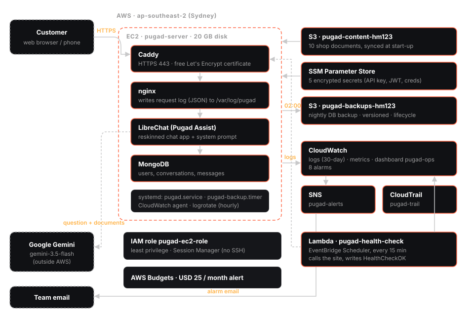
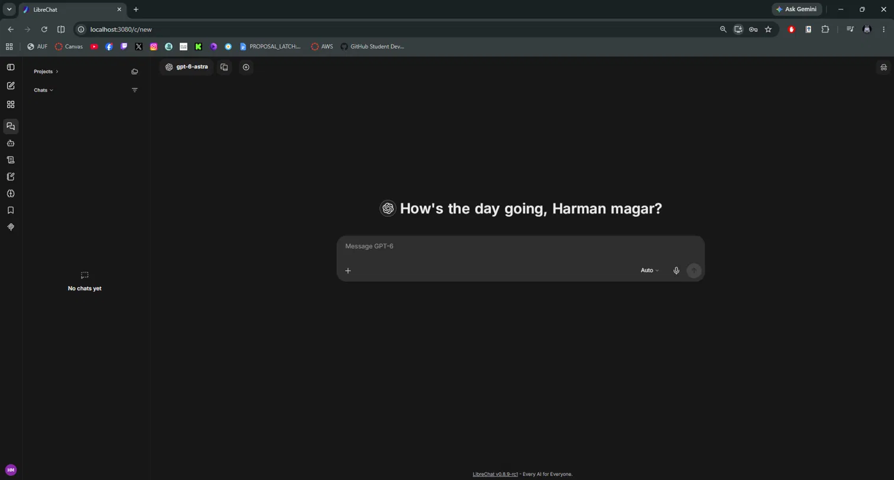
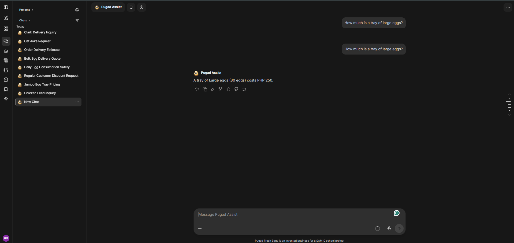

A shop chatbot, moved to the cloud
and kept alive.
Pugad Assist answers customer questions for an invented egg supplier in Pampanga. We put it on Amazon Web Services, then watched it, backed it up, locked it down and proved it recovers when something breaks.
13-239-67-10.sslip.io · ap-southeast-2 · gemini-3.5-flash
- Automation & incidentdebug.log 9.0G → fixed in ~2 min⌘ ↵
- Monitoring & alarmspugad-disk-filling · 15:54:06 UTC⌘ M
- Results: before and afterdetect ~4 min · fix ~2 min⌘ R
- EvidenceE-12a E-12b E-12c⌘ E
Executive summary
In plain English
- We built the assistant. It answers only from ten shop documents. E-01
- We rented a computer in the cloud. One server in Sydney runs it, with a padlock (HTTPS).
- We watch it. A dashboard and eight alarms that email us. E-06E-07
- We copy it every night, and proved a copy really restores: 1 user, 1 chat, 2 messages, matching the live server. E-11b
- Two chores run by themselves: the nightly backup, and a check of the site every 15 minutes. E-15aE-15b
- We broke it on purpose. We filled the disk, got the alarm, and fixed it in about two minutes. E-12b
- We kept the bill small, with a USD 25 monthly budget alert. E-16
The report

AWS infrastructure design
One server, with managed AWS services around it for secrets, backups, logs and alarms.

System card
What Pugad Assist is, what it knows, its model, its limits, and who should not use it.

Baseline
Where we started: stock LibreChat on a laptop and an empty AWS account.

Well-Architected review
Six pillars rated good, adequate or gap, and the one gap to fix first.

Monitoring, backup and security
The dashboard, eight alarms, a proven restore, and security before and after.

Automation and the incident
Two automations that run on their own, and a disk-full fault fixed in two minutes.

Results
Before and after, with cost and graphs.

Next steps
Five improvements, most important first.

Evidence
Every screenshot behind every claim on this site.

Declaration and video
Our signed declaration and the project video.
Pugad Fresh Eggs is not a real business; every price, place and contact detail is invented. Pugad Assist is based on LibreChat (MIT licence).